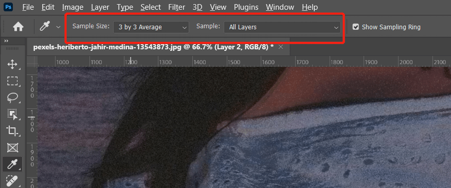

通过 AI + Photoshop 修复偏色图片

在一些特殊光照条件下很容易拍出偏色的图片，通常情况下很难恢复原有细节。现在有了很多 AI 工具可以方便的恢复原有色彩细节。
下面介绍通过 Photoshop 结合一个 AI 上色网站的方法来恢复图片色彩。
Palette：https://palette.fm/
首先需要通过 Photoshop 将图片去色，通过快捷键 ctrl shift U 快速去饱和度：
然后保持图片到本地，打开 palette 官网，上传灰度图片即可：
从生成的多个模板中选择一个最合适的色彩图片：
点击 download 下载下来，这里下载 HD 图片需要付费，免费模式下只能下载一个低清晰度的图片，但我们可以后期在 Photoshop 中恢复高清细节。
将下载的彩色低分辨率图片导入到 Photoshop 中，放在原始偏色的图片上面：
我们只需要它的色彩信息，所以将混合模式改为 color，此时图片细节已经恢复了，但噪点较多：
新建图层，混合模式改为 color：
拾色器改为 3*3，all layer 模式：

选择画笔工具，选择 soft 笔刷，在衣服出选择一个正常颜色的区域，按住 alt 键拾取色彩，然后使用笔刷涂抹整个衣服区域：
此时衣服颜色就恢复正常了，同样的方式处理皮肤部分：
然后就可以根据实际情况调节细节了，这里我们给嘴唇上点颜色，新建 solid color 红色图层，并反转蒙版，蒙版涂抹出嘴唇部分，混合模式改为 multiply：
调节 layer style 柔滑高光过渡：
画笔工具化的区域如果过于生硬，可以调节蒙版属性羽化值来柔化选区：
以下就是最终效果：
标签：无